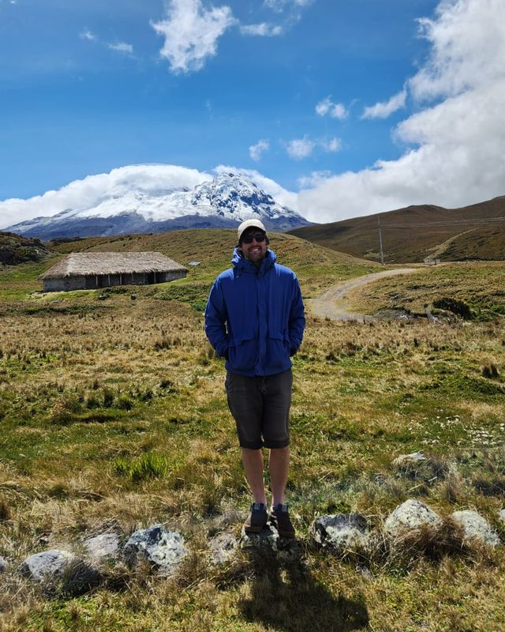
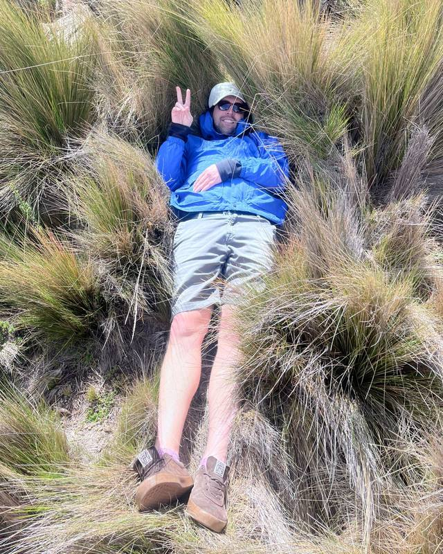

What's in my samples?
Bacteria and archaea from 16S and fungi from ITS, sequenced on Nanopore, PacBio or Illumina and matched against curated references such as SILVA and UNITE.
I'm a bioinformatician at the Centro de Biotecnología de Sistemas in Santiago, Chile. I help biologists turn DNA sequencing into answers about fungi and other microbes: which ones are in a sample, how much of each, and which ones nobody has named yet.
Along the way I write open-source tools, ITSxRust, EMITS and SSUplex, and test how far the usual methods can be trusted.
Most of my projects start with a biologist and a question. You bring the samples or the reads; I bring the pipeline, the statistics and a report your whole lab can open in a browser. It's worth talking before you sequence too, because the primer pair decides much of what the analysis can recover.
Bacteria and archaea from 16S and fungi from ITS, sequenced on Nanopore, PacBio or Illumina and matched against curated references such as SILVA and UNITE.
Species-level abundances that share a read between look-alike species instead of handing it to the first match, so close relatives aren't over- or under-counted.
Sequences that match nothing in the reference get a calibrated flag, with the false-alarm rate set in advance, so calling something novel is a claim you can defend.
Your primer pair decides which regions each read carries and what can be recovered from it. The read explorer shows how much one choice changes.
What you get back: an interactive report the whole lab can explore, a pipeline that reruns end to end, and a methods section ready for your manuscript. Recent projects include vineyard soils, tree roots and mycorrhizal fungi, bioleaching and acid mine drainage, compost time series and food-safety surveillance.
Much of the fungal DNA in a soil sample comes from groups that no reference database has a name for, yet classification software still hands back a name. These three companion studies ask how often those names are wrong, whether newer AI classifiers do any better than a plain similarity search, and how to flag sequences that are genuinely new at an error rate you choose.
With Auguste Gardette, César Marín and Pilar Parada
On ITS2 amplicons, the kind most fungal surveys produce, the two released MycoAI classifiers assign the wrong family most of the time, even for genera they were trained on. A plain similarity search still gets nearly nine in ten right.
Five methods scored the same 5,222 queries, one per genus, at two loci cut from the same records: the full-length ITS and its ITS2 subregion. On full-length ITS, best-hit alignment, SINTAX and a k-mer classifier (HiTaC) beat both pretrained MycoAI models at every rank. Cutting the records down to ITS2 is where the models fall apart.
Share of seen-genus queries given the correct family, on the full-length records the MycoAI models were trained on. Every method scored identical queries, and the classical methods already lead.
The same records cut to ITS2, the subregion surveys most often sequence. Alignment and SINTAX lose under four points; MycoAI-BERT loses 49.6 and MycoAI-CNN 58.0.
From the manuscript under review at Briefings in Bioinformatics.
ITS2 carries the information, since HiTaC refitted at ITS2 keeps 89.2%; the released models read the flanks instead. Grafting a query's unaltered ITS2 between the flanks of a donor from another phylum made MycoAI-BERT return the donor's family for 63.7% of queries and the query's own for 0.8%. On ITS2 their confidence scores also stopped separating novel genera from known ones (AUROC 0.541 and 0.503, against 0.866 for alignment identity).
With Auguste Gardette
We built an AI model specifically for fungal barcodes, and it did not beat a carefully configured similarity search. How the test was run changed the answer more than the model did.
We trained a convolutional encoder for fungal ITS with genus-proxy, cross-view, hierarchical and episodic objectives, then froze and hash-sealed it before the test partition was opened. Exhaustive VSEARCH identity scored the same queries against the same references, on a genus-separated split of UNITE at ITS-core, ITS1 and ITS2 views. Once the evaluation was corrected, alignment matched or exceeded the encoder throughout.
Queries from genera held out of the reference, placed in the correct family. Each bar spans the three views, after the corrections below.
Five evaluation checks each changed a conclusion along the way:
The decisive results came from the evaluation, not the representation, and each check is cheap to apply to any learned barcode method.
With César Marín and Pilar Parada
A way to say “this sequence is probably something new” while knowing in advance how often that call will be a false alarm.
A fixed identity cutoff comes with no stated rate at which known fungi get called new. The flag gives each environmental sequence a conformal p-value instead, with a distribution-free bound on that rate. It was tested on a leave-one-genus-out benchmark built from UNITE, then applied to soil data and to a cross-study recurrence search for lineages that are widespread but still unnamed, candidates for formal description.
Screen against a pan-eukaryotic reference first. Plant ITS2 is amplified alongside fungi and otherwise looks novel against a fungal reference.
Rank each sequence's best alignment identity against a calibration set from known genera held out of the reference. The rank is its p-value.
Call it new when the p-value falls below α, chosen in advance. Known sequences are then declared new at a rate bounded by α.
Open source
Cuts the fungal barcode out of each long read, and tells you why when it can't. Under the hood it finds ITS1, 5.8S and ITS2 inside Nanopore and PacBio amplicons by chaining four profile-HMM anchors, and falls back to two-anchor pairs when a read is missing a flank, so every region it returns still has a model boundary on both sides rather than a read edge. Failures come back as structured codes and a per-sample QC summary instead of a silently shorter FASTA.
Extraction rates and timings from O'Brien et al. 2026, Methods in Ecology and Evolution.
Full ITS recovered from a 54,659-read Nanopore library, at 4.6× the speed of ITSx.
Reads that match several species almost equally well are why species-level abundance tables lie. EMITS shares those reads between the candidate species instead of guessing, so close relatives aren't over- or under-counted. Under the hood it runs expectation-maximization over minimap2 alignments against UNITE, aggregates across redundant accessions, and has presets for Nanopore and PacBio chemistries.
Sorts ribosomal reads by where they came from: bacteria, archaea, eukaryotes, mitochondria or chloroplasts. That matters when host or organelle DNA would otherwise swamp the community you meant to study. Under the hood it pulls small-subunit rRNA out of environmental reads on either strand before sorting.
Built for the lab
Where a sample came from, what was done to it and which run it ended up in, with role-based access so the people doing the bench work can enter their own data.
Metal balances and recovery curves across minicolumn campaigns, deployed on site so results are current rather than reconstructed from spreadsheets at the end.
Snakemake and Nextflow workflows for the centre's Nanopore runs, with PICRUSt2 functional profiling and interactive D3 reports for vineyard soil, bioleaching and acid mine drainage, compost time series and food-safety surveillance.
I started out writing banking software, moved into bioinformatics through a master's at the University of Maine, and still build tools the way software teams do: tested, versioned and documented.
M.S. Bioinformatics, University of Maine (2020–2024), taken alongside the Kraken and UVA roles. B.S. Computer Science, Florida Southern College (2014–2016).
Talks
I like to hike, especially in Chile, where the Andes and their volcanoes are never far away. I love the south, places like Valdivia and Puerto Varas, where a hike is also a walk through fungal and plant diversity. Next I'd like to get to know northern Chile and the Atacama, and to hike more in Canada, the US, Europe and Asia, places where the diversity is obvious and the relationships between living things become easier to see.


Whether you have samples, reads or just a question about primers, write to me in English or Spanish. I'm happy to talk through a project at any stage, from choosing markers to making sure the analysis holds up in review.